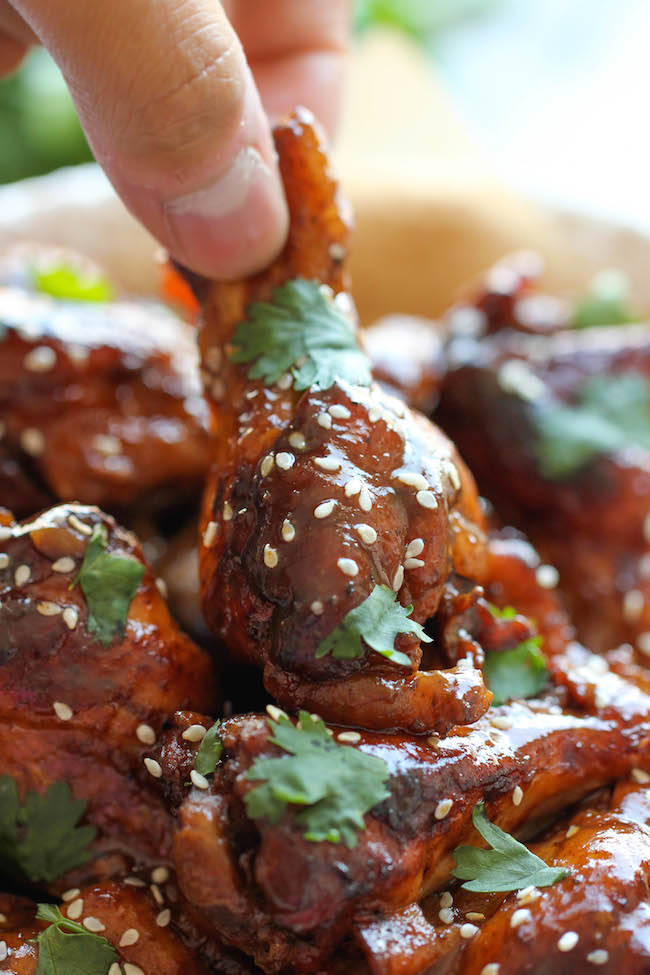

Slow cooker sticky chicken wings

Description
The easiest wings you will ever make. Just throw everything into the crockpot and you’re set for the most tender, fall-off-the-bone chicken wings!
Ingredients
- 3 pounds chicken wings
- 2 tablespoons cornstarc
- 1 tablespoon sesame seeds
- 2 tablespoons chopped fresh cilantro leaves
For the sauce
- 1/3 cup reduced sodium soy sauce
- 1/3 cup balsamic vinegar
- 1/3 cup brown sugar, packed
- 1/4 cup honey
- 3 cloves garlic, minced
- 1 teaspoon Sriracha, or more, to taste
- 1 teaspoon ginger powder
- 1 teaspoon ground pepper
- 1/2 teaspoon onion powder
Steps
- In a large bowl, whisk together soy sauce, balsamic vinegar, brown sugar, honey, garlic, Sriracha, ginger powder, pepper and onion powder.
- Place wings into a slow cooker. Stir in soy sauce mixture and gently toss to combine. Cover and cook on low heat for 3-4 hours or high heat for 1-2 hours.
- In a small bowl, whisk together cornstarch and 2 tablespoons water. Stir in mixture into the slow cooker.
Cover and cook on high heat for an additional 10-15 minutes, or until the sauce has thickened.
- Preheat oven to broil. Line a baking sheet with foil.
- Place wings onto the prepared baking sheet and broil for 2-3 minutes, or until caramelized and slightly charred.
- Serve immediately with remaining sauce, garnished with sesame seeds and cilantro, if desired.